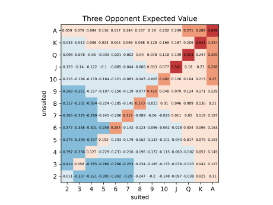

The computer program yielded the following charts. For each chart, our program simulated one million random games for each hand. Each of the 169 possible hole cards are listed here, with suited cards being on the bottom right, and unsuited being on the top left. The information is displayed as a "heat map" with both the colour of each box, and the number inside it, showing the winning chance for the hand it coresponds to in percent. Something to note is that the probabilities of being dealt each of these sets of hole cards are not equal. In general the probability of drawing a given suited hand is 2/663, that of drawing a given unsuited hand is 2/221, and that of drawing a given pocket pair is 1/221.
-->As can be observed from the charts, as the number of opponents faced goes up, suited cards become more preferable. Also, while it is commonly asserted that 7, 2 offsuit is the worst hand on poker, this is only true for games with more than four opponents. For smaller games the worst hand is 2, 3 offsuit. I believe this can be attributed to the fact that in small games having potential for a straight isn't as important as straights are relatively uncommon. However, as the size of the game grows, drawing to a straight is much more important, as with more people at the table better hands are needed to win the game.
To observe trends across a variety of opponent counts for each hand the concept of expected value was introduced. Expected value for the following charts was calculated assuming that each player bets one, and only one, "unit bet" each game. The winning takes all of the unit bets.
These charts show how much you could would win per game on average if you were to play each of these hands assuming each of your opponents bets once on the blinds always. Hoever, there is much more to betting in poker than the blinds. I initially thought that it was only a good idea to play hands with a positive expected value on these charts, but I now believe that the decision making process involved is less black and white. This is because you can raise after the blinds have been played, when you already know that you have a good chance of winning. This means if you don't get anything on the flop you only stand to loose the one chip you paid for blinds, but if you do get something, you stand to win much more than one chip from every player. This means that the expected values of playing these hands in real life poker don't perfectly reflect those in the above charts. The colourscale on the following charts is determined by how much you would have to expect to win in terms of the bet required from the blinds from each player on average to give a positive expected value of playing a given hand. While this is somewhat subjective, I believe it is likely a good idea to play hands that require at lease 1.25 times the blinds in winnings per player, because of how you can raise after you get a good hand.
Another thing to consider is how the frequency at which you fold your hand pre-flop determines how much control you have over the game. What I mean by this is that if you were to play every hand, you are not taking advantage of your ability to filter out the bad ones and your winnings would therefore be more due to getting lucky cards dealt to you. On the contrary, if you were to fold every hand excpet for when you had to play the blinds, this strategy would be effectively the same as playing every hand, due to the fact that your game is determined by how good the cards you're dealt when you're blinds are. I am not yet sure how to determine, of if there exists, an optimal playing frequency to give the player the most control over their game.
I was initially under the impression that folding your hand preflop has a negative expected value, because you have to pay the blinds when its your turn. However I now believe this to be a misconception as when you pay the blinds you are essentially entering the game with a random hand, and the expected value of a random hand is zero.